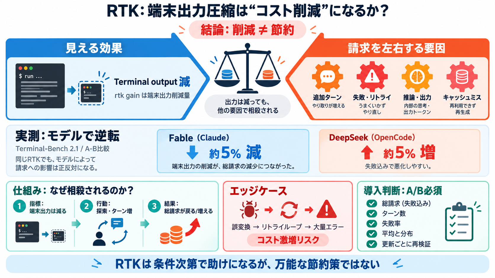

RTK: The CLI Proxy That Cuts Your AI Coding Token Bill by 80%
A typical 30-minute Claude Code session consumes ~118,000 tokens on shell command output alone. With RTK, that drops to …

A typical 30-minute Claude Code session consumes ~118,000 tokens on shell command output alone. With RTK, that drops to …
# RTK (Rust Token Killer): Up To 90% Token Savings For Claude Code And Codex ## Learning Podcasts 5440 subscribers 13 li…
rtk (“Rust Token Killer”) is a CLI proxy with a simple, appealing pitch: your agent runs `git status`, rtk intercepts it…
It supports nearly all subcommands for Git, and test runners offer the greatest savings. Most commands frequently used d…
This happens dozens of times in a single session. A 30-minute Claude Code session on a TypeScript or Rust project can ea…